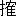

京にのぼる供は二十人くらい、虫の
垂衣で
蔽うた馬上の女のすがたは、遠目にも
朝涼の中で
清艶を極めたものであった。
袴野ノ
麿を真中に十人の荒くれ男が
峠路にかかる供ぞろいの一行を、しんとして展望していた。離れ山の洞窟のこの荒くれ男から、少し
隔れた切株の上に腰をおろしたわかい女は、なまなましい脚を組んで、やはり山麓をゆく一行を
徐に見まもっていた。
「
野伏、そちが先に立て。」
あだ名を
野伏ノ
勝というわかい男は、もう馬を引き出していた。後は総勢であったが、袴野ノ麿はおれが行かなくともよかろうといった。すると切株の上の女はあたしも行くといい、立ち上った。
「すてはならぬ。」
何故ならぬと、すて姫は
気色ばんでみせたが袴野はこれには
応えない、用意した男たちは密林の中にはいると、一瞬の間に姿を消した。袴野は手めがねをして眼を放さないでいる。どうして一緒にやらないのさ、野伏と一緒だからやきを
廻しているのねと、すては密林がそよともしない
山凪の中でいった。こんな山で女の声が立つ奇異な生なましい感じ、袴野はすてには答えずに、彼女にちかづくと手を引いて、その肩を
いた。余り
嫉きすぎるわよ、仕事にも出掛けないであたしに附き切りじゃないの。それも仕様がない、お前は一日ずつ女になって行くばかりで、おれはそのわかさを
趁っかけている、おれの外はみなわかい男ばかりだ、殊に野伏はわかい、野伏はお前のそばに寄りたがっているし、お前は
焚火の座でも野伏の向う座にすわるようにしている。おれはお前の細かい気づかいを見ていると一日は永く
辛い、袴野はすて姫の手を引いて洞窟にはいって行こうとするが、これには、すて姫は少しもいやがりもしなかった。こう
諾かなかったらすて姫のこぼれるわかさを、溶きほぐすすべも、なかったからだ。永い愛撫の時が終った。さすがにすてが洞窟の前の明るい広場に立ったときは、その肉体は
隙だらけで柔らかく、もみほぐされてほたついていた。
「いまの内に水あびを。」
「皆のいる間は水あびもさせないのね。」
「皆はそれを見たがるからだ、おれは皆にそれを見せたくない、……」
「あんなに沢山にいる男の眼からどうからだを
匿したらいいのさ、歩けば足が出る。暑ければ胸が出る。」
袴野はそれには答えずに、また、手めがねをして眼を旅人の一行から放さない、不思議なことに向うの
山峡に突然黒い人間らしい者が、殆どそれは
胡麻粒くらいの一行がうごいて、旅人のあとを追うているらしい、向い山のおなじ山稼ぎの
貝ノ
馬介の
追手であった。これは無事に落ち著いても
財は二つの山割りか、悪くいけば
揉み合いになるに決っていた。袴野は
失敗ったと
呟いたが、
「すて、あれを見よ。」
「貝ノ馬介ね。貝はお侍だというじゃないの。」
「もとはみな侍なのだ、貝はお前を狙っている。」
袴野はにわかに自分の装束をつけはじめ、すてはそれに手伝った。五十二歳になる袴野は野装束をつけると、
眼附も足もとも違った
逞しさを現しはじめた。しかしすての気づかいは本気で言った。
「女にさわったからだで出掛けていいの。」
「うむ、だがお前から
貰ったものでおれが
後足を踏むことは
滅多になかろう。」
眼につかれがあった。それを蔽うてあふれるものもある、ね、気を附けて、袴野はその言葉にいつわりなぞ
潜むものではないと思った。
山塞にはもう誰一人としていない、袴野は皆とは一足先にかえることが出来るし、
塞にすて一人を置いて行くことの
安堵さは、どういう安堵したことがらよりも、さばさばしたものだった。
すては谷間に下りる前に、袴野の
下著を取り出したが、ふと、野伏の下著もそれにまぜて抱え、日あたりの谷間の岩のうえに坐り込み、野伏の下著をひろげると、その臭気を

いでさわりを頬にあてて
触ってみた、乳房から下腹部にかけて例のじいんとして来た、彼女はたぐり寄せて
縋るようにまた下著を
いだ、そして勢好く裸になると谷川の淵に飛びこんだ、泳ぎ終ると下著をそれぞれにすすぎ、若い木の枝にかけて干したが、暑い日ざしは彼女の洗った髪がかわくよりも早く、かわいていた。それを下げて塞に戻ると、野伏の下著は野伏の物の中につき込み、袴野の物は袴野のしきりのある塞の奥にしまい込んだ。
すてが再び
塞の前に立って、例の手を
拱いて見やった時に、
迥かな山平に袴野ノ麿と貝ノ馬介とが、みやこの先刻の女を間に置いて、なにか問答の渡り合いでもしているふうであった。みやこの女はまだ
市女笠を
被り
壺装束のままだったが、突然、貝ノ馬介がそばに寄るとその
羅を、さすがに手荒いふうではなく物穏かに
引剥いだ。日の中にさらされた
何処かの姫の顔は、見たことのない白いものだった。すての顔はのぼせ唇はふるえた。袴野と貝とが女の奪いあいでもめているのだ。すては塞にいま一頭の馬の用意のあることを知ると、密林の間道をひたすらに
馳った。
すての馬上の姿を見ると、貝ノ馬介の
小方十人に、袴野の小方十人は機先を制せられて、勢好く
著いたすてを見上げた。すてはまず袴野の顔に激昂のあとのないのを見取り、ついで貝ノ馬介が手綱を取っている手の平の汗までわかるような
焦りを、眉の間に見附けた。みやこの女はすてが現れたので、さらに二重の驚きをかくしきれないふうだった。すては袴野にいった。
「
何故引き上げにならないの。」
「少しこみ入った話になったのだ、お前はあれに控えておれ。」
「いいえ、この
方の奪いあいの談合をしているのではないか、貝様、そのようでございましょう。」
「この女の代りに
財は皆袴野ノ麿に進ぜよう、と、そうおれが計っているところだ、だが、袴野は財は山割りにして女はみやこに
還した方がよいというのだ。」
袴野はいった。
「この女をわれ一人で都に還すには、おぬしに疑義があろう、おぬしと二人で都はずれまで
諸共に送って行ったなら、納得が行こうというもの。」
「そこで途中の
藪でその
腕っ
節で貝が
殺られるのか、そうは子供をあやすようにはまいらぬ。」
「貝、おれがそのような
嘘吐きに見えるか。」
「
殺め仕事はその場のものだ、そうはさせぬと言っても、そうせねばならない時は
殺るし殺られる。」
「ではこの場はどうする。」
「おれに任せろ、なあ、袴野、すて姫に指一本
障らぬ今までのおれにあやかってくれ。」
「すてにはおれがいる、何を
恍けたことを言うのだ、女はおれが都に
還す。」
「そして女が訴えて出たら？」
「都はずれまで送ったものを無下にするようなお人ではなかろう、姫ご、わきまえてもらえるか。」
「決してそのようなことは致しませぬ。」
その優しい
箏のような声だけでも皆の頭は
緊った。その時、すてがいった。
「ではあたしが都はずれまでこの方を送りとどけたら、苦情は両方になかろう、貝どの、それで
財は山割りにし今日のところ引きわかれにして下さらぬか。」
貝ノ馬介は少時して意外にも素直に、
肯いて見せた。袴野は貝がにべもなく引下がったのがすて姫が口をきいたからであり、そのために袴野はいやな顔をしてみせたが、この場合こうさばくより外に仕様もなかった。貝の物たずねたげなすてに色気のある
容子にも、袴野は
何時かはこの男を殺らねばならないことに、迫られている気がした。すては、貝に、よく聞き分けてもらえて
嬉しいといい、貝は、すてどのの口利きでは貝も聞きとどけねばなるまいといった。
「ではお姫様、都はずれまでお送りいたします。」
瞼の切れの上品な彼女は、もう、落ちつきを取戻してお
計い何ともおん礼の申しようもございませぬといった。
繊手のかがやきは貝ノ馬介のむねに、まだ名ごりを眼の内にとどめた。この女を還した後の何年かは、女というものをこの山中で知ることの出来ない残念さがあった。しかしそれを押し切って女をものにすれば、仲間が割れるばかりか袴野が刃がしらを向けて来るだろう。女一人を手に入れることは
山塞者にとって、全部の仲間を敵にまわすことにもなる、禁じられた女の肉体は命とすれすれの線に引っかかっている。
突然、袴野の
小方の野伏が、立ち上っていった。
「すて様一人では途中が思いやられる。都の姫さまもそのままでは土民の戯れが気がかりだ。」
わしを供に
遣ってくれと袴野に乞うた。
袴野は言下にかぶりを振った。こういう機会をうまく、袴野にもすらすらと
諾かそうとする虫のよい
肚が見えた。
「すて一人でも沢山だ、だが、小方二人あてを両方から
従けさそう、しかし野伏はならぬ。」
野伏は苦り切って引き退がり、すては表には眉も眼もうごかさなかった。袴野がこれを許すはずはない、でも、万一にも袴野が聞いてくれたらと、それを思い遣るとすては大腿が躍る
弾みを感じた。結局、両方から小方二人ずつが
従いて、都の女をすてが送ることになり、野伏ノ勝は居残ることになった。
日はまだ高く、二人は馬上で暑さを避けることが出来た。女と名づく者ともう何年も話したことのないすては、都の女の壺装束の綾と、うすものに心が惹かれた。そしてすては、都ではいま装束の流行はどうなっているか、高貴な女はみなやはり
輿に乗っているか、道化のしばいがあるか、男はみな太刀をはき、かんむりをかぶっているかなどと
訊ねた。そして彼女は十三の時から都の町を歩いたことがない、衣装は
悉く人から取り上げたものばかりで、あるいは短くあるいは長いと笑いながらいった。姫は馬の上で、
羅のかぶり物、
錦の帯をといてすてに与えていった。
「わらわは
四条院の
藤原良通の娘、時が経った後でもお訪ねあれ、必ずおかくまいいたしまする、名は良通の姫とだけ、……」
「いえ、あなた様をたずね身の振り方をつけるようなことなぞは、先ず、ございますまい、山稼ぎ者は、ことに女の身は明日は誰の者になるかも分らぬ。」
「あなたはあのご老人の添い方でいらっしゃいますか。」
「袴野に十三から育てられ、ただいまは妻になっております。袴野は父、そして夫に代る者です。」
「おん名は、」
「すて、すて姫とみながそう言っております。」
すては自分が都の女と、対等の女らしい言葉をつかい、女らしいよそおいが心にまで入ってくるのが、時間が経つとしだいに判り出して来た。上品なものに崩れかかるようなものが、すてを柔らかく仕立ててくるようであった。都の女はすての顔立にある男らしさを美しいといい、すては女はみなこうあらねばならぬ
頸のほそれを、都の女に
対って
褒めていった。
千畳の
藪前で、間もない都がやや夕づいた景色を見て、二人は別れようとして、都の女はすての手をとり、いただくふうにして謝意をのべた。いのちも、からだをも守ってくだすったあなたは、女であるからそうして下されたのだ、事情あって都に
遁れてお見えの折は、きっとわらわを頼って来てくれと彼女は先刻と同じようにいい、
瞼をしばたたいた。不思議な友情をはっきり見てから、すても永い間経験したことのない女の気持をむさぼるよう、むねにかき
いた。すては元来た道を、
羅で
面を蔽うたまま馬をはしらせた。彼女はこの虫の
垂衣が
嬉しくてならなかった。
この日袴野と小者らは一時に出払い、山塞には生きものは何も一匹もうろついていなかった。すては髪を洗い岩の上でそれを乾かしながら、自分が山稼ぎの中のただ一人の女であることをなんとなく、気になり出していた。
何時かの都の女をたすけてから、都の町のようすが知りたかったし、夜にまぎれて大路を歩いて見たかった。この岩上から見える都の煙らしいものは、きょうもあいたいとして
愉しく
揺曳していた。彼女は野伏ノ勝を思った。だがどのようにしても袴野の眼を
掠めることは出来ない、岩のすきま林の中くさむらの間にも、袴野の眼がきらつくと思えば、そこにかならずその
眼附が見えていた。袴野に拾われなかったらすては、どうなっている女だか判らない、すての一心もここにある、仕えることの止むをえない、また心からのものも交っていたのだ。彼女はその時、自分の名前が非常に注意深い低さで呼ばれていることを、殆ど半信半疑で耳にいれた。この間際に、すては貝ノ馬介の
厳丈なすがたを山塞の入口に見出した。それは勿論、袴野の他出を知っての事ながら、敵塞に踏みこむということはよほどの決意のもとで、そうなされたことを予感しなければならないのだ。
「すてどの、馬介が、来ました。」
と、
咄嗟では貝ノ馬介は子供のような不用意な声でいった。
「何の用かや。」
「そなたを
きに参った。」
「たわけたことを言わしゃるな。」
「ここまで来るからには、そなたにも決心のほどを知るがよい。眼をつぶって男というものの賭けたいのちを頼む、それは無下に棄てさせないでな。」
「なりませぬ。」
「そのように言わずに頼む、十年の間耐えていた。」
「…………」
「ただのいちどでよい、いちどで。」
「なりませぬ。」
「手をついて頼む。」
「どのように言わしてもいやじゃ。」
「何としても
反かしゃるか。」
「頼む、
去んでくれ。」
「去なぬ。」
「去ないでどうする。」
「そなたに思いを遂げるのだ。」
「あたしでも女ぞ、たやすくは、させない。」
すては、
痒い髪を掻いて見せた。その二の腕は噛みつきたいほど、ふくれて
白がこぼれた。すての顔色は驚きも
怖れもみせずに、貝ノ馬介が見つめるままの生ぐさい、色気のあるものであった。馬介はずっと近づくといきなりすての手を取り、そばに引き寄せた。すてどの、かくごはしているなと、貝はがらにもなく優しく言った。いや、心は決めていない、貝どのがどんなふうに出て来るかを見極めているのだといった。貝は、すての
裳に手をかけそれをかかげようとしたが、すては一気に鋭く払い
退けた。ふたたび貝がそれを繰り返した時に、すては貝の手の甲をはたいた。貝はおとなしく手を引きこめると、こんどは肩を
こうとし、それも、すてによってはずみが食わせられた。すてどの、おれに狼の名を
著せぬよう承知してくれと、貝は拝むような眼附でそう言ったが、すては、ではあたしにも恥を掻かさないで
いただけで帰ってくれ、貝どのの命にかかわることだからといった。
「何としても
諾きいれてもらえぬか。」
「もう袴野の帰る時刻じゃ。」
すては肩からながれる長いからだで、すらりと立ち上った。
貝ノ馬介はもうどうにも自制の利かない、先々の考えを
打棄る時にかかっていた。彼はすての肩を上から圧して、坐れといった。すては素直にぺたんと坐った。くずれる肉体はさすがに坐ったままであった。すては貝からのがれる事はおろか、貝のままになるより外はなかった。逃げても逃げ切れないし、
挑んでも
抗いきれるものではない、ただひとつの事はうまくだまして貝をそのまま帰すことだけが、一さいが無事にすむことになるのだ。しかしすては身をまかせることがいやであった。ふしぎに考えたこともないほど他の男に身をまかせることが、いやでいやで仕様がなかった。知らんふりをしていればいいじゃないかと、たかを
括ってみるが、やはりいやなことはいやであった。袴野は勿論野伏にも合す顔がない、なんだか合す顔がないということが、合されない顔になると考えこむと、
凜乎として来た。しかし貝は両肩を
羽掻責めにして、かかった。
「すてどの、眼をつぶって許してくれ。」
「なりませぬ。」
貝ノ馬介は完全に、すてのすがたを自分の
大兵な装束のなかに、悠然としまい込み、すては気味の悪いほどしずまり返った。貝はもう言葉というものを発しなかった。物恐ろしい無言の人間が二人そこに置かれたきりだ。かたまりは
何処までも声のない間に、時間を
揉み
潰していてとかれなかった。貝どの、よしなされと低い声がそういった。何度もそれが言い続けられた
挙句に、こんどは叫びになってすての喉から、手むかう声がほとばしった。貝は依然無言だった。その時、すての顔色が突然紫色に変わり次にその唇を二つに割られたときに、貝はそこに永いくちづけをしたが、すてはその間際に殆ど無意識になにかを
咥えこんだ。このはずみに貝は突然、うああ、……という
体躯の全部からしぼり出された
声音を、続け
様に草の間にうつ伏せになって発した。その時、非常に素早い
滑らかさですては起ち上って口元に手を
遣り、手にべたつく一杯の血を草の間にぺっとりと吐きつけた、そしてなおぬたつく口元に手をやって、いそいで谷間に下りると、続け様に水をふくんで、かあっと口を
灑いだ。すての顔色に斑点のようなあお白さが、最初はぽつぽつに現れはしたものの、次第にその斑点はそれぞれに溶け合って全面を蔽い、彼女はお
臀のような蒼白い顔の女になった、それは美しいというよりも、皮膚の静まり切ったふくらがりが、自分のしたことを
些っとも悔いていない平坦さを見せ、その顔はかがやいているふうに見られた。
彼女が谷間から上った時には、貝は、のた打ったあげく、多量の出血でもはやあえなくなっていた。すてはそれを
少時立って見てから、ボロきれで顔を蔽い、木の葉をからだに
被せ、そして両手はしぜんに
合掌された。自分のしたことが判りはじめ、それより外に身を避けることの出来ない場面を、すては再度眼にえがいた。そして彼女はそこの芝の上に坐りこんだまま、芝をむしり取って汗をふいた。汗はいまになって全身を、濡らして来た。こうならなかったら、あたしは貝ノ馬介のものになり、袴野ノ麿のものでなくなったはずなのだ、これより外にあたしのすることがなかった。彼女はまた
夥しい汗をふいた。貝ノ馬介の死体がふいにいま動いたような気がし、すてはボロきれを取ってその顔をあらためて見たが、顔は思ったよりも苦痛の色をうかべずに、柔らかであった。すてはその
瞼を優しく閉じてやってやはり
其処から動かずに、芝のうえに坐ってまた冷たい汗を
拭いて、貝ノ馬介の死体を茫然と
打眺めていた。
半時ばかり経って袴野の一行が、野狩の
財を抱えて皆戻って来た。
袴野ノ麿はすての顔色を見ると、彼自身の顔色もたちまち思いがけない驚きに、曇った。
「すて、お前の顔色はどうした。」
すては黙って
人差ゆびで、ボロきれをかむった死体をゆっくりと指さして見せた、すては声が出なかった。
袴野はボロきれを取り除いて、その死体の顔をあらため、殆ど
叫喚に似た奇声があげられた。
「貝ノ馬介じゃないか、あ、舌を、すて、お前のしわざか。」
「ええ。」
「よくもやってくれた。」
「それより外にあたしの
逃場がなかったんだもの。」
むしろ冷然と、舌は偶然に
噛み切ったのだ、その
心算は頭にも抵抗の時にもなかったと、すては、他人事のように言った。
「おれはいま初めてすてを見直した。それほどにこの袴野を思うてくれていたとは、きょうまで気がつかなかった。」
何んの、と、すては
自嘲してにが笑いをして見せた。
「ただこうなったのも、その場の
廻り合せさ、貝どのには相済まないこと、あなたにはそれがあたしの
よそ事せぬようにして見せただけだ、あたしの
心算はそんな
気勝げな気持ではない、ただ、いやでいやでじゃ。」
「からだは？」
「触られただけ。」
「お前はえらい女だ、もとは侍の落し子らしいが。」
「侍が何か。いまは山者のあぶれ女じゃ。」
袴野はこういうすてが気負って言っているのだと思ったが、
落著きはらったすてに、こういう無関心な冷たさがあろうとは思えなかった。袴野すらも手に負えない貝ノ馬介を、一撃のもとにやった事が袴野の驚異以上のものだ、こういう驚異の元になるものを持つすてに、彼はにわかに警戒さえも感じた。わかい野伏と事をはかっておれにかかって来ることがないとも限らない、きょうは今までにない不思議な美しさを、彼はすての全面に感じた。殺意の後に来る色を失っている皮膚の乾燥した、わずかなやつれがやっと
際立って見えた。
「すて、おれはお前をきょうから大事に仕えるぞ。」
すては返事をせずに、依然、自嘲をつづけた。
「おれは余りに嫉妬深かった、お前の本来の心も知らなかったのだ。」
「それより貝どのを
鄭重に埋めてやりや。」
「うむ。」
「貴人のようにあつかってやってくだされ。」
その時、袴野は偶然に貝の死体を
小者にはこばせながら、その後について言った。
「すて、おれも何時かはこんな目に遭うかも知れない、
対手は
何処にでもいる。」
「山者は仕方がないわ、
野晒しさ、あたしだってね。」
「お前は女だ、切りぬけて永く生きられる……」
「おなじ事よ、明日のことは誰も判らない。」
山塞は秋を経て冬にはいると、すての顔色は沈みがちに胸は苦しく、殆ど食物に手をつけずに臥している日が多くなった。袴野ノ麿は草根木皮をあつめてこれを煮てすすめたが、
験はなかった。
物忌みや
憑き者のせいかと、袴野は都はずれに出掛け、医術の心得のある
媼をさがして歩いた。すて自身も何かのせいで憑き物でもあるような日頃が
鬱陶しく、渓流の岩の上に出て、激しい
吐瀉嘔吐の叫び声をあげた。それは全身に波を打ってくるような苦痛であり、山の尾根までがその
咄嗟の吐瀉のあいだ、波を見るそれのように揺れてくるような気がした。
或る日袴野は一人の年古びた
媼をつれて、すての容態を見せた。すてはこの媼の顔をみると、人間が次第に古びて行った
処で厳しい表情になるものだということを知った。媼はすてを見ると、かんたんに言った。ああ、そうか、そうあろうより外に何もないと
呟いた。そしてすてに耳打ちしていった。
「懐妊じゃ。」
「懐妊とは？」
「腹に人間の子がうごいていることをいうのじゃ。」
すては驚きを現すまいとして、媼に声低く
訊いた。
「
何時頃かや。」
「夏の月の中ほどに思われます。」
媼は腹をさすって見てから、間違いないと言った。すてははじめて眼に驚愕の情をあらわし、そしてそれを直ちに承認するふうであった。媼は生れる月と日頃とを示して、迎えがあるなら
何時でもまいりますといって、下山して行った。すては疑いもなく貝ノ馬介のコドモを
孕んでいることを知ったのだ。すては谷川べりに出て、眼にうるんだ優しい、いいようのないあまいようなものを腹の中に感じた。あの日のああいう短い瞬間に一人の人間は死に、一人の人間がうまれるべく用意されたことの、解きようのない出来事の謎がこの女を打って来た。袴野は彼女の前に突っ立ったまま怒ってどなった。
「一たい誰の子だ。」
すては答えなかった。袴野はその日からずっと
臥ているすてを、ふて寝でもしているように邪魔者扱いにし、きりょうが衰えてゆく一人の女を卑しげに見据えていった。もっと隅っこに邪魔にならないよう寝ていろ、と。
春近くふたたび
媼が登山して来た時、袴野は媼を
塞の外に連れ出してきびしい質問を続け、媼は懐妊に不思議のないことを告げた、袴野はそれが
孕んだ月をつぶさに聞き取り、媼にもはや訪れることなきように、叱るようにいった。媼はわたしのせいじゃあるまいしと
呟いて去り、すてはそれらの問答の内容は判らなかったが、袴野の怒った顔附が何のために怒っているかを知ったが、やはり冷然として
這入って来る袴野を見返った。袴野はいった。
「誰の子だか言えたら言って見よ。」
「貝ノ馬介どのの子供や、間違いなく。」
「何故あんな奴の子を孕んだのだ。」
「そんなことがあんな時に誰が判るものか、
阿呆いうな。」
「判らなかったのか。」
「死ぬ覚悟で来た人だ、何があたしのちからで防げるものか。」
「そのがきは水で冷やして殺すがいい。」
「温めて永い間生かしてやる。
塞のぼろ
屑をみんな持って来い、温めてふとらせてやる。貝ノ馬介が死んで生れて来たのだ。」
袴野は自分の猛るよりも、すての猛りがさかんで手向い出来ない高飛車なものであること、懸命なそのくそ
落著きにこの女、人がちがって来たと思った。それ以来、彼は塞の中に
何時も二つの瞳が、昼も夜もぎらぎらして近寄る気にもならなかったが、ようやく、野伏ノ勝が不浄物の始末をしているのを今は
見遁す気になっていた。野伏ノ勝は夜も昼もすてに附添ってみとりを続けたが、そんな小汚い女は汝にくれてやると、袴野はやけくそになって
呶鳴った。勝はただ黙々として
食餌のこと不浄物のことを、まめやかに立ち働いた。塞の奥のすての二つの瞳は或る日は野獣の凝視にもえているような時と、また、またたきを失っている
茫やりした時と、あるいは野うさぎのように物かげにかくれようとしている時の、そのかがやきを交叉していた。
全山全塞に緑の季節が来て、媼は登山し、野伏ノ勝は
白鼠のようにはたらいて、ついに、すては一人のでかい赤ん坊を生み放った。赤ん坊は育ちに育ち、すてのきりょうは赤ん坊を生んだ時から、顔にあったざらざらしたものまで拭き取られて、すべすべした美しい皮をかむって来た。袴野の驚きはすての変貌にひきよせられ、彼は目をほそめて、すてのそばに寄ろうとしたが、すては叱り飛ばすようにこの老いた野獣を一挙に退けた。そしてその頃には、野伏ノ勝もそばによせつけなかった。赤ん坊を抱いたすては、もはや、それだけで色気たっぷりのこぼれる景色のものであった。何やら、えたいの判らない子守のうたが、塞の奥からほそぼそとそとにまで漏れて来て、小者どもも、あ、そうかとちょっと笑い顔になって通り過ぎた。
袴野はすてから赤ん坊を取り上げるか、殺すかしなければ再びすてが自分の物にならないことを知った。或る日すてが寝ている間に袴野は赤ん坊を抱き上げようとして、耳
聡いすてに発見された。何する、と、すては叫んで赤ん坊を自分のむねに抱き
緊めた。
「そいつがいるからお前はおれを
嫌うのだ。」
「この子を殺す気か、本当をいえ。」
「おれに任せよ、苦労のないようしてやる。」
「袴野どの、あたしは貝の舌を噛み切ったくらいの女だ、この子に指一本でも
触って見よ、あんたのからだぢゅうに、……」すては
煤のようにくらいものを眼附に漂わして言い続けた、「……からだはおろか、ノドブエだってがりがりみんな噛みくだいて
遣る、この子にちょっとでも触ったらそれがあんたの最後だと思うがいい、ほらね、これだって何の苦もない、……」
突然、すては
爐にささった竹の
火箸を手に取ると、唇に
咥えこんだと見る間に、あろうことかばりばりと上と下の白い前歯で噛み砕いた。歯と唇とから一面に鮮血が
噴いてはしった。袴野は
凜乎としてあの日の貝ノ馬介の、どこが何やら見境のない血だらけの顔面を眼にうかべた。
「ほらね、
唐金だってね。」
彼女は再び唐金ののべ棒を手に取って見せた瞬間、袴野はいたたまらなくなって、にわかに用向きがあるよう努めて平気を装うて、急ぎ足で塞の前の場に出て行った。あのまま
昂らせて置いたら、歯は一枚もなくなるまで噛み砕くだろう、何という、何という女だ、あの赤ん坊をまもるためには奴は何をするか判らない、袴野は生れてはじめて怖れというものを、間近の、寝床ではだらしのないすてから感じた。ばかばかしい事だがと袴野は気やすめに
脅かしやがると思ってみたが、ばかばかしい事は決してばかばかしいものの正体ではなかった。
袴野はすぐ塞の横手で野伏ノ勝に行きあった。勝、この間から苦労をかけたな、行くぞ、彼はそういうと
藤蔓を
鞘のように巻いた山刀を、石の上でしごいて藤蔓を切り放った。そして白刃を勝の眼の前にのべた。お前も何か持てと、袴野は
呶鳴った。勝は平然として言った。袴野どの、おれを斬ると仲間が割れる、いまは大事な時だぞ、
焦るまいと言ったぎり、野伏ノ勝は去った。おれは早まった、眼がくらんでいるのだ、彼は塞にもどると、すての手当をし、口を拭き薬草を塗っていった。謝る、すて、おれが悪かったと彼はいい続けた。
数日後すては衆人の眼の前で、赤ん坊を抱いて、大胆に殆ど冷却しきった顔附で、山塞を去ろうとしかかった。袴野はいった。
何処に行くのだ、彼女は言った。
「
何時かの四条院の姫様の所にこの子をお預りしていただくのや、姫とお約束してあるのだ。」
「そしてもう帰らぬか。」
「それは判らぬ、この子をしかと預かってもらえるかどうかによってだ、十三から育ったあんたの恩は
無下にしない。」
野伏ノ勝が絞るような
声音でいった。「戻って来なされい。」
袴野は一生懸命にこれも優しく言った。「必ず戻れ、都ではお前のような女はおちついていられぬぞ、これだけは真実だ。」
「戻るか、戻らないか判らない。」
袴野のいいつけで一頭の馬が用意され、すてはそれに
跨ると例の
羅の虫の
垂衣を抱えて、それを証拠に四条院の
邸と聞いたみやこに、山の塞を去って行った。茫然となすことを知らざる余りに不意な出来事に、袴野はいまさらすてのすべすべしたからだを、殆ど全身にむず
痒く感じながら物ほしげに見送った。